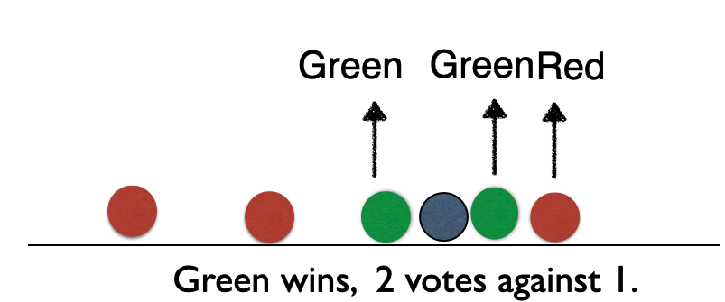
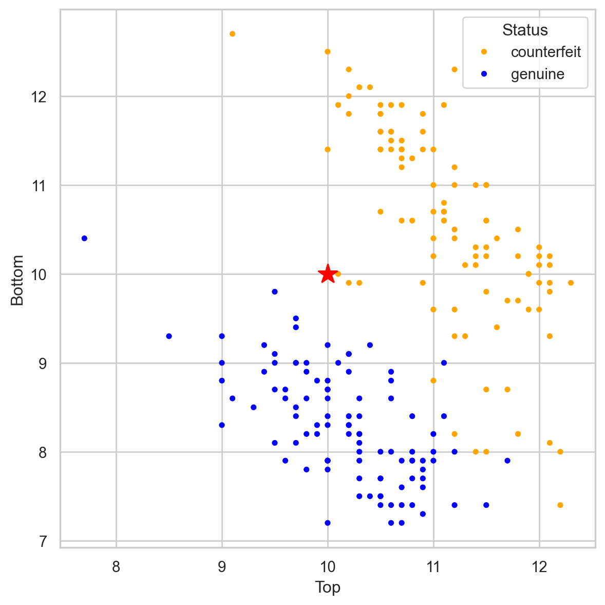
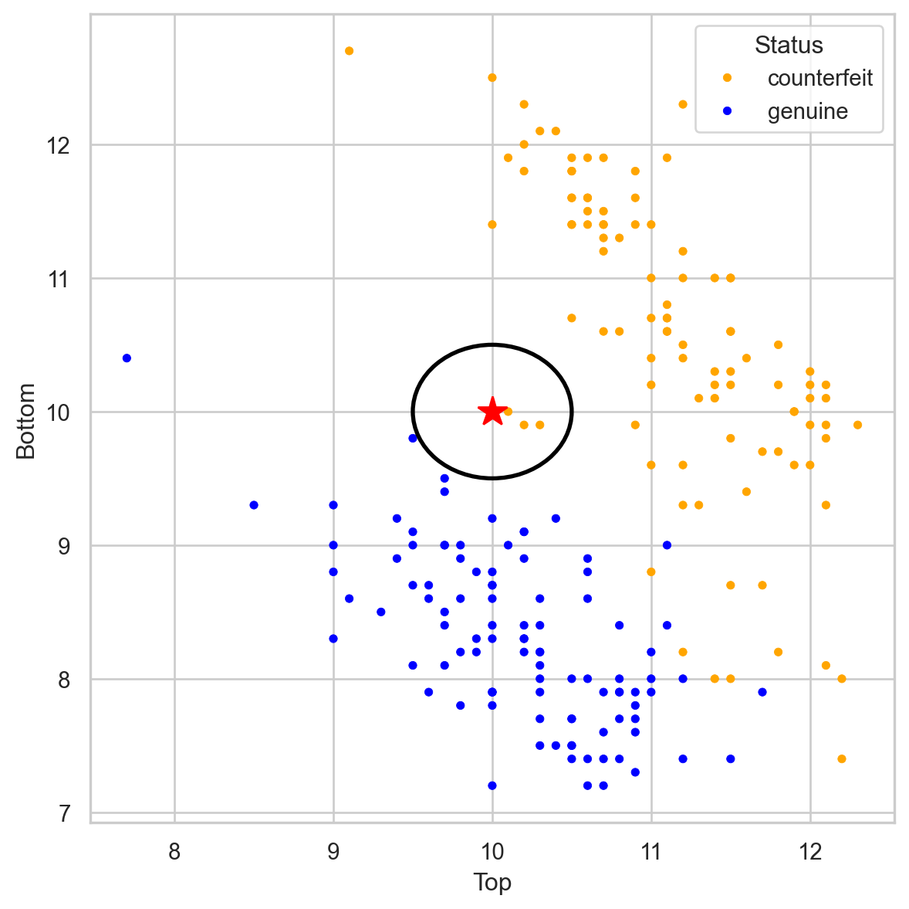
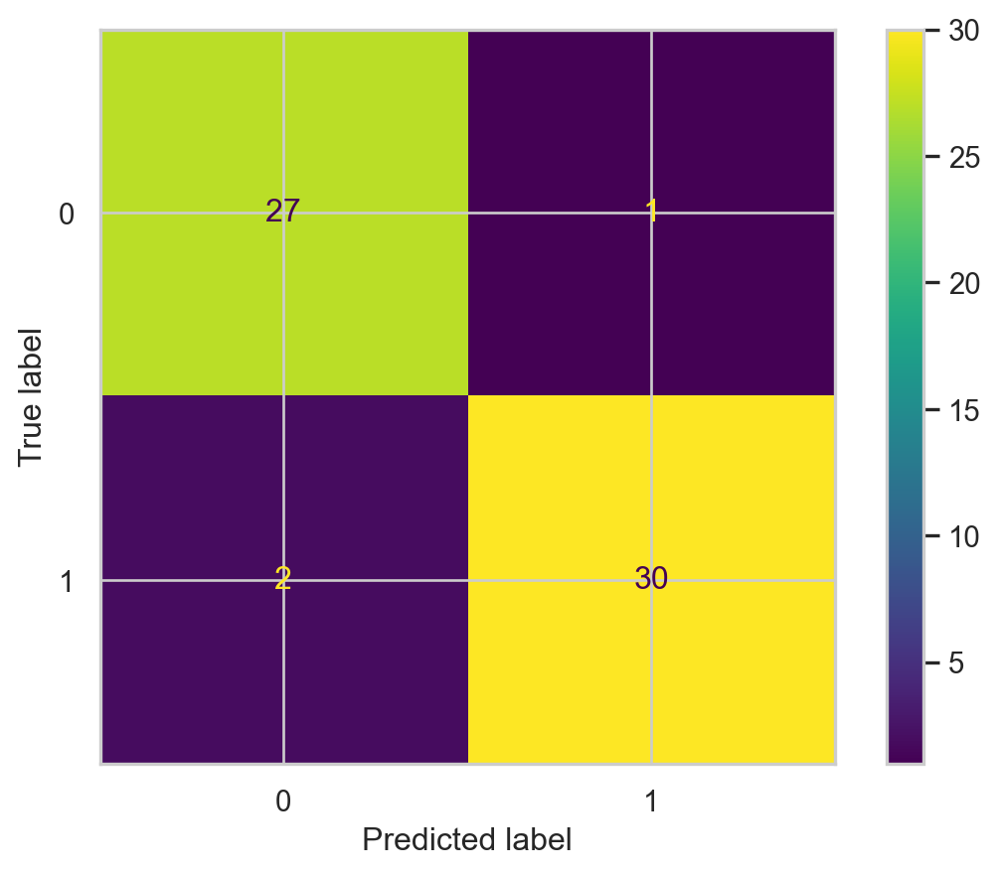
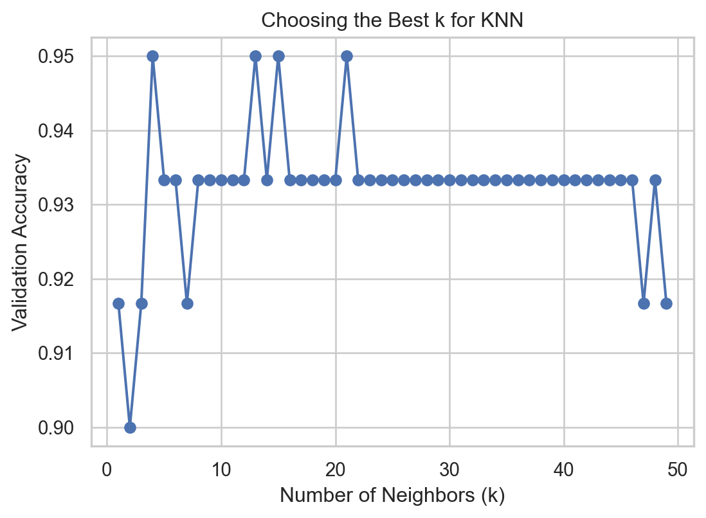

# Importing necessary libraries
import pandas as pd
import matplotlib.pyplot as plt
import seaborn as sns
from sklearn.model_selection import train_test_split
from sklearn.tree import DecisionTreeClassifier, plot_tree
from sklearn.neighbors import KNeighborsClassifier
from sklearn.preprocessing import StandardScaler
from sklearn.metrics import confusion_matrix, ConfusionMatrixDisplay
from sklearn.metrics import accuracy_scoreK nearest neighbors
IN2004B: Generation of Value with Data Analytics
Load the libraries
Before we start, let’s import the data science libraries into Python.
Here, we use specific functions from the pandas, matplotlib, seaborn and sklearn libraries in Python.
K-nearest neighbors (KNN)
KNN a supervised learning algorithm that uses proximity to make classifications or predictions about the clustering of a single data point.
- Basic idea: Predict a new observation using the K closest observations in the training dataset.
To predict the response for a new observation, KNN uses the K nearest neighbors (observations) in terms of the predictors!
The predicted response for the new observation is the most common response among the K nearest neighbors.
The algorithm has 3 steps:
Choose the number of nearest neighbors (K).
For a new observation, find the K closest observations in the training data (ignoring the response).
For the new observation, the algorithm predicts the value of the most common response among the K nearest observations.
Nearest neighbour
Suppose we have two groups: red and green group. The number line shows the value of a predictor for our training data.

A new observation arrives, and we don’t know which group it belongs to. If we had chosen \(K=3\), then the three nearest neighbors would vote on which group the new observation belongs to.
Nearest neighbour
Suppose we have two groups: red and green group. The number line shows the value of a predictor for our training data.

A new observation arrives, and we don’t know which group it belongs to. If we had chosen \(K=3\), then the three nearest neighbors would vote on which group the new observation belongs to.
Nearest neighbour
Suppose we have two groups: red and green group. The number line shows the value of a predictor for our training data.

A new observation arrives, and we don’t know which group it belongs to. If we had chosen \(K=3\), then the three nearest neighbors would vote on which group the new observation belongs to.
Nearest neighbour
Suppose we have two groups: red and green group. The number line shows the value of a predictor for our training data.

A new observation arrives, and we don’t know which group it belongs to. If we had chosen \(K=3\), then the three nearest neighbors would vote on which group the new observation belongs to.
Banknote data

Using \(K = 3\), that’s 2 votes for “genuine” and 2 for “fake.” So we classify it as “genius.”
Banknote data

Using \(K = 3\), that’s 2 votes for “genuine” and 2 for “fake.” So we classify it as “genius.”
Banknote data

Using \(K = 3\), that’s 3 votes for “counterfeit” and 0 for “genuine.” So we classify it as “counterfeit.”
Banknote data

Using \(K = 3\), that’s 3 votes for “counterfeit” and 0 for “genuine.” So we classify it as “counterfeit.”
Closeness is based on Euclidean distance.
Implementation Details
Ties
If there are more than K nearest neighbors, include them all.
If there is a tie in the vote, set a rule to break the tie. For example, randomly select the class.
KNN uses the Euclidean distance between points. So it ignores units.
Example: two predictors: height in cm and arm span in feet. Compare two people: (152.4, 1.52) and (182.88, 1.85).
These people are separated by 30.48 units of distance in the first variable, but only by 0.33 units in the second.
Therefore, the first predictor plays a much more important role in classification and can bias the results to the point where the second variable becomes useless.
. . .
Therefore, as a first step, we must transform the predictors so that they have the same units!
Standardization
Standardization refers to centering and scaling each numerical predictor individually. This places all predictors on the same scale.
In mathematical terms, we standardize a predictor \(\mathbf{X}\) as:
\[{\color{blue} \tilde{X}_{i}} = \frac{{ X_{i} - \bar{X}}}{ \sqrt{\frac{1}{n -1} \sum_{i=1}^{n} (X_{i} - \bar{X})^2}},\]
with \(\bar{X} = \sum_{i=1}^n \frac{x_i}{n}\).
Example
The data is located in the file “banknotes.xlsx”.
bank_data = pd.read_excel("banknotes.xlsx")
# Set response variable as categorical.
bank_data['Status'] = pd.Categorical(bank_data['Status'])
bank_data.head()| Status | Left | Right | Bottom | Top | |
|---|---|---|---|---|---|
| 0 | genuine | 131.0 | 131.1 | 9.0 | 9.7 |
| 1 | genuine | 129.7 | 129.7 | 8.1 | 9.5 |
| 2 | genuine | 129.7 | 129.7 | 8.7 | 9.6 |
| 3 | genuine | 129.7 | 129.6 | 7.5 | 10.4 |
| 4 | genuine | 129.6 | 129.7 | 10.4 | 7.7 |
Create the predictor matrix and response column
Let’s create the predictor matrix or response column
# Set full matrix of predictors.
X_full = bank_data.drop(columns = ['Status'])
# Vector with responses
Y_full = bank_data.filter(['Status'])To set the target category in the response we use the get_dummies() function.
# Create dummy variables.
Y_dummies = pd.get_dummies(Y_full, dtype = 'int')
# Select target variable.
Y_target_full = Y_dummies['Status_counterfeit']Let’s partition the dataset
We use 70% for training and the rest for validation.
# Split the dataset into training and validation.
X_train, X_valid, Y_train, Y_valid = train_test_split(X_full, Y_target_full,
test_size = 0.3)Standardization in Python
To standardize numeric predictors, we use the StandardScaler() function. We also apply the function to variables using the fit_transform() function.
scaler = StandardScaler()
Xs_train = scaler.fit_transform(X_train)KNN in Python
In Python, we can use the KNeighborsClassifier() and fit() from scikit-learn to train a KNN.
In the KNeighborsClassifier function, we can define the number of nearest neighbors using the n_neighbors parameter.
# For example, let's use KNN with three neighbours
knn = KNeighborsClassifier(n_neighbors=3)
# Now, we train the algorithm.
knn.fit(Xs_train, Y_train)Evaluation
To evaluate KNN, we make predictions on the validation data (not used to train the KNN). To do this, we must first perform standardization operations on the predictors in the validation dataset.
Xs_valid = scaler.fit_transform(X_valid)Next, we make predictions.
Y_pred_knn = knn.predict(Xs_valid)Confusion matrix
# Calcular matriz de confusión.
cm = confusion_matrix(Y_valid, Y_pred_knn)
# Mostrar matriz de confusión.
ConfusionMatrixDisplay(cm).plot()
Finding the best value of K
We can determine the best value of K for the KNN algorithm. To this end, we evaluate the performance of the KNN for different values of \(K\) in terms of accuracy on the validation dataset.
best_k = 1
best_accuracy = 0
k_values = range(1, 50) # Test k values from 1 to 50
validation_accuracies = []
for k in k_values:
model = KNeighborsClassifier(n_neighbors=k)
model.fit(Xs_train, Y_train)
val_accuracy = accuracy_score(Y_valid, model.predict(Xs_valid))
validation_accuracies.append(val_accuracy)
if val_accuracy > best_accuracy:
best_accuracy = val_accuracy
best_k = kVisualize
We can then visualize the accuracy for different values of \(K\) using the following graph and code.
Code
plt.figure(figsize=(6.3, 4.3))
plt.plot(k_values, validation_accuracies, marker="o", linestyle="-")
plt.xlabel("Number of Neighbors (k)")
plt.ylabel("Validation Accuracy")
plt.title("Choosing the Best k for KNN")
plt.show()
Finally, we select the best number of nearest neighbors contained in the best_k object.
KNN_final = KNeighborsClassifier(n_neighbors = best_k)
KNN_final.fit(Xs_train, Y_train)The accuracy of the best KNN is
Y_pred_KNNfinal = KNN_final.predict(Xs_valid)
valid_accuracy = accuracy_score(Y_valid, Y_pred_KNNfinal)
print(valid_accuracy)0.9666666666666667Discussion
KNN is intuitive and simple and can produce decent predictions. However, KNN has some disadvantages:
When the training dataset is very large, KNN is computationally expensive. This is because, to predict an observation, we need to calculate the distance between that observation and all the others in the dataset. (“Lazy learner”).
In this case, a decision tree is more advantageous because it is easy to build, store, and make predictions with.
The predictive performance of KNN deteriorates as the number of predictors increases.
This is because the expected distance to the nearest neighbor increases dramatically with the number of predictors, unless the size of the dataset increases exponentially with this number.
This is known as the curse of dimensionality.